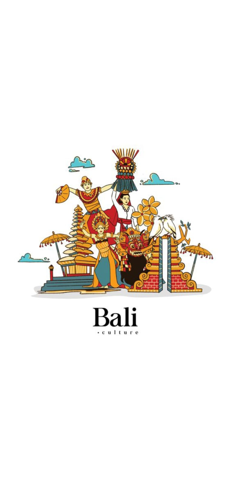

Project

Fresh Graduate
“I'm a fresh graduate of Informatics Engineering from Gunadarma University in 2024, with an interest in web and Android application development. Committed to continuous learning and seeking new experiences in the technology field. Solution-oriented and capable of self-directed learning.”
August 2020 - August 2024
Gunadarma University, Indonesia
GPA: 3.75/4.00
Final Project: Android App for Bali Tribe Introduction
June 2019 - August 2019
Managed and recorded financial transactions using Microsoft Excel.
Processed incoming and outgoing letters.
Assisted in drafting official documents.
Enhanced efficiency in data processing and documentation.
Occupation Junior Web Programmer
Badan Nasional Sertifikasi Profesi, 2024.
Test of English for International Communication
Educational Testing Service, 605, 2019.
Test of English Proficiency and Skill
Neo Spectra, 470, 2024.